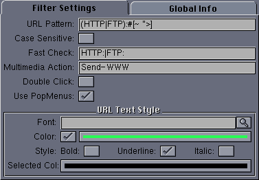

|
User Interface
|
The user interface for this filter looks like this:

The available configuration options are:
- URL Pattern - An AmigaOS pattern which matches a URL.
- Case Sensitive - If set, pattern matching is case sensitive.
- Fast Check - Since pattern matching is slow on some systems,
an initial faster check for these fixed strings is performed, and only
lines which contain one or more of the given strings are checked for the
actual URL pattern. This can save quite a few expensive pattern
matches. This string should contain one or more strings separated by a
vertical bar ("|") character.
- Multimedia Action - This is an action from the
Multimedia Actions
list that will be invoked when the URL address is clicked. The
multimedia type is application/X-URL. The multimedia
action may be any user defined action; for example, to send the
article text to a web browser such as IBrowse.
- Double Click - If selected, then a doubleclick is needed to
trigger the action for this URL. Otherwise, a
singleclick is sufficient.
- Use PopMenus - If selected, then a popup menu is created for
URLs allowing the URL to be copied to the clipboard,
or any multimedia action defined for the type
application/X-URL to be executed. More than one multimedia
action may be defined.
- Font - If non-null, this font is used to display the URL.
- Color - If selected, this color is used to display the URL.
- Style - The text style for displayed URLs.
- Selected Col - This color is used to display URL's
when they are pressed using the mouse.
Back to Top
|